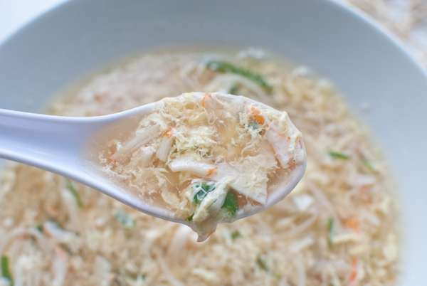

Egg Soup

for 2 people
Tool
Pot
time
15m
Kcal
199kcal
Ingredients
3 Eggs
5 Krammies
Half bag Mushrooms
Little Green onion
2 tablespoons Soy sauce
3~4 tablespoons Starch water
1 Chicken stock or Meat broth
Recipe
Put chicken stock or meat broth in to the pot with water
Then wash the mushrooms. Tear the Krammi and chop the green onion
Put all the trimmed materials in to the pot
Put 3 whip eggs and stir the soup with chopsticks
Put 3-4 tablespoons of starchy water.
